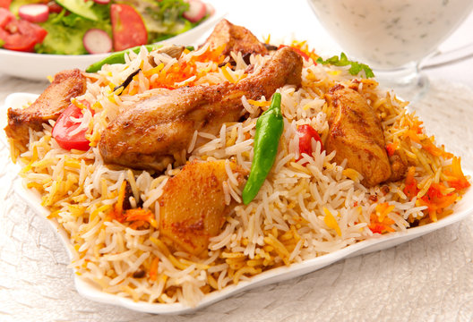

Chicken Biryani is a flavorful and aromatic dish that combines tender chicken pieces with fragrant basmati rice, spices, and herbs. This iconic dish, popular in South Asia, is prepared by layering marinated chicken with partially cooked rice, then slow-cooking it to perfection. The blend of spices like turmeric, cumin, and garam masala, along with saffron and fried onions, gives it a rich and delicious taste, making it a favorite for special occasions and everyday meals alike.
Go Back